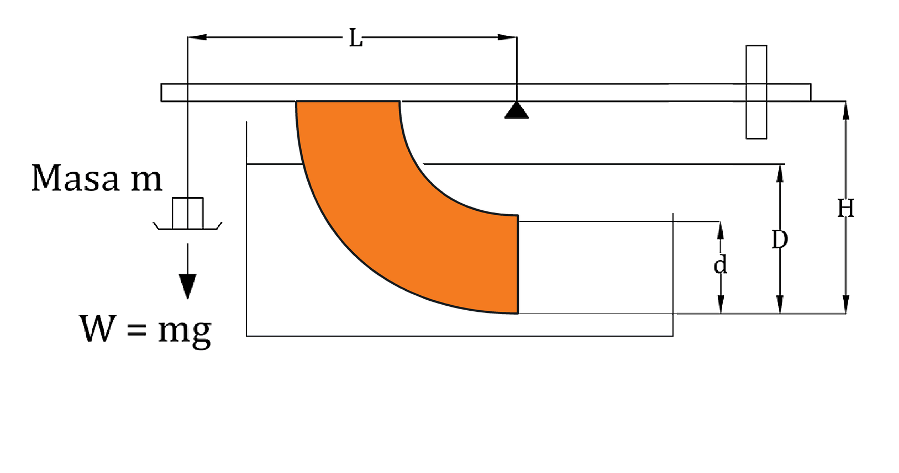

⚗
Laboratorio de Fluidos: FUERZAS HIDROSTÁTICAS
Banco de fuerzas hidrostáticas
Listo para el ensayo
ALTURA d0,0 mm
Sistema en desequilibrio

100500
d = 0,0 mm
20 g
W·L = F [(H−D) + (D−d) + ⅔d]
Datos del laboratorio: D = 0,100 m · H = 0,200 m · b = 0,075 m · L = 0,275 m · ρ = 998,2 kg/m³ · g = 9,81 m/s²